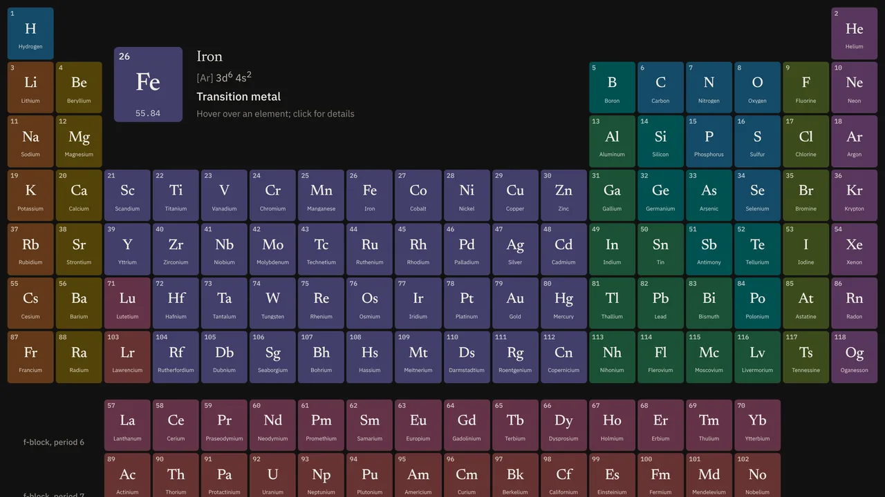
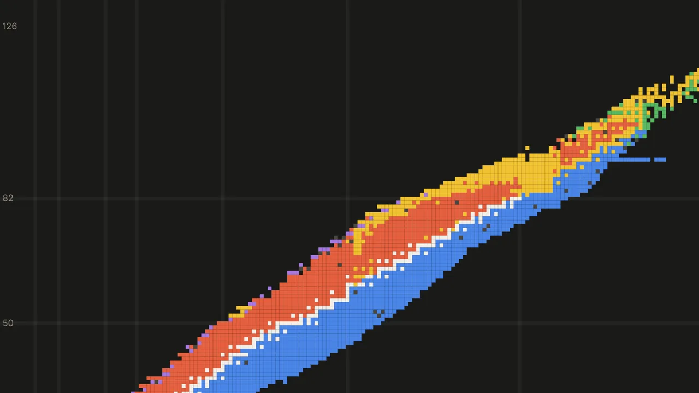
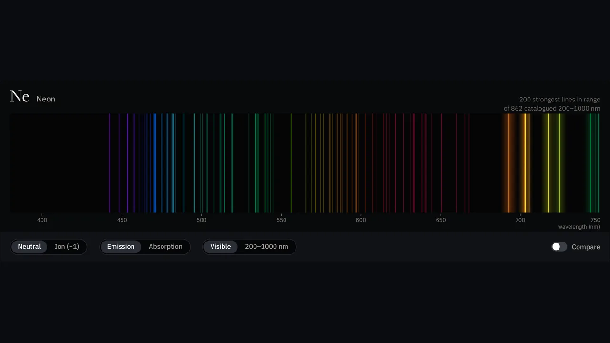
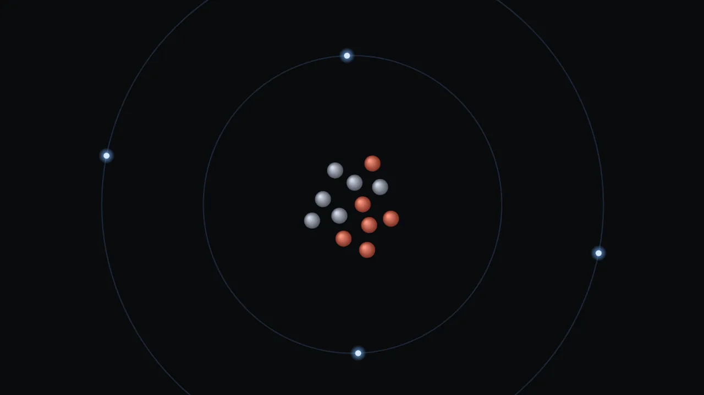

An interactive guide
The Atom
There are 118 kinds of atom, and everything you have ever touched is built from them. This guide shows what they are really like, with simulations computed from the laws of physics and data from the laboratories that measure them.
Atoms are usually drawn as tiny solar systems, with electrons circling a nucleus like planets around a sun. That picture is more than a century out of date.
A real electron has no orbit. It exists as a standing wave, a cloud of probability with a precise and often beautiful shape, like the one drifting above. A real nucleus is tens of thousands of times narrower than its atom, yet carries almost all of its mass. The rules that govern these two parts explain the colour of a sodium street lamp, the layout of the periodic table, and how the Sun shines.
The chapters below build on one another, but each stands on its own. Nearly every figure is a small simulation: drag it, change its settings and watch what happens. Where you see a number, it is a measured value from the databases of NIST, the IAEA and PubChem, or it is calculated in your browser from fundamental constants.
Contents
Seven chapters, about two hours in total
- 1 Smaller than smallZoom from a grain of salt to a quark. How small atoms are, how empty they are, and the three particles they are made of.Scale · particles · mass
- 2 How we found outFrom Greek philosophy to Rutherford’s gold foil. Run the experiment that revealed the nucleus.Models · experiments · evidence
- 3 Quantum leapsWhy electrons can only hold certain energies, and how jumping between them paints every colour in a neon sign.Waves · energy levels · spectra
- 4 OrbitalsThe true shapes of electron clouds, calculated exactly from the Schrödinger equation and drawn in 3D.Wavefunctions · nodes · quantum numbers
- 5 Building the tableAdd electrons one at a time and watch the periodic table assemble itself from the rules of quantum mechanics.Configurations · blocks · trends
- 6 The nucleusIsotopes, the strong force and radioactive decay, mapped across nearly 3,400 known nuclei.Binding energy · decay · E = mc²
- 7 Atoms togetherWhat a chemical bond really is: electron waves overlapping between two nuclei, with a measurable energy and length.Covalent · ionic · polarity
Tools
Reference instruments built on the same data




Six numbers worth knowing
Each is explained in the chapters
The typical width of an atom. Ten million of them side by side would make a line one millimetre long.
Chapter 1How much wider a hydrogen atom is than its nucleus, a single proton. Blown up to the size of a football pitch, the atom would hold a nucleus under 2 mm across.
Chapter 1The share of a carbon atom’s mass carried by its nucleus. The six electrons, which give the atom its size, add almost nothing to its weight.
Chapter 1How much heavier a proton is than an electron. This mismatch is why chemists can treat nuclei as nearly fixed points while electrons do all the moving.
Chapter 1The energy needed to pull the electron out of a hydrogen atom: about five times what a photon of visible light carries.
Chapter 3Roughly how much of a proton’s mass comes from the three quarks inside it. The other 99% is energy of the strong force that binds them, as E = mc² allows.
Chapter 1